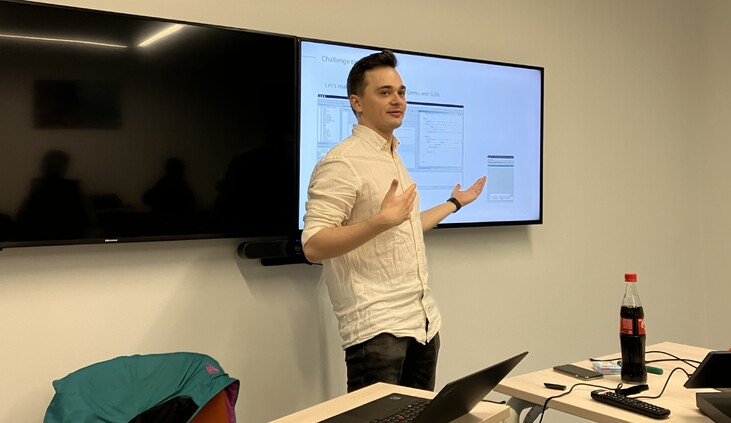

Reverse Engineering Training

Last week marked a very important milestone for me: I conducted my first offline reverse engineering workshop. It took a lot of effort and energy, but it finally happened! I want to express special thanks to my colleagues without whom this couldn’t have happened for the idea, support in organizing and developing the idea further!
My first attempt at this was 4 years and 3 jobs ago and I’m really proud that after all this years, I managed to implement it exactly how I wanted.
It was amazing to see the progress of the students. Each absorbed new knowledge at their own pace, and I saw how every workshop participant came out more skilled than they were just 3 days ago.
Receiving knowledge for 3 consecutive days is very challenging, and I saw it in the eyes of the students. Movies pay special attention to how action and calm moments alternate, including for the viewer to rest. In one of the next iterations of the workshop, I want to implement this.
I placed a particular emphasis on structuring the workshop in a very specific way. Usually, training programs are designed as follows: first, all the necessary theory is presented, and then tasks are given that need to be solved using this theory. I don’t like this way of delivering knowledge. That’s why I created the workshop in reverse order. In many cases, I first provided the absolute minimum of theory, and then gave assignments that raised questions for the students to find answers to on their own or with my help. Knowledge gained in this way is much better perceived and retained.
One of my goals was not only to provide knowledge but also to make the training as interactive as possible. And I succeeded! People weren’t shy about asking questions, often very interesting ones. Sometimes we took a significant detour from the material to address the students’ questions, and it was great. In this format, we get a workshop adapted to a specific audience, here and now. Another thing that pleased me is that people started working together. Of course, part of this is due to the fact that the workshop was for my colleagues, and we all knew each other, but it’s still cool.
A crucial part of the program was the warm-up at the beginning of the workshop. I asked all the students to briefly talk about their background in reverse engineering and share their goals for this workshop. Such warm-ups play an important role in getting participants acquainted with each other and fostering dialogue. In the future, I want to think about how to incorporate such warm-ups into each day of a multi-day workshop.
One of the important tasks for the future is not only the warm-up but also possibly organizing interaction between students. Imagine how much more knowledge a student can gain if they understand the topic themselves and, after completing a task, help others. Or how much the value of the workshop will increase if some of the participants leave it as comrades-in-arms! This is a very interesting topic for exploration.
I also received a very interesting proposal from one of the students - to include examples of real vulnerabilities in the next version of the workshop. That’s also a very interesting idea to consider.